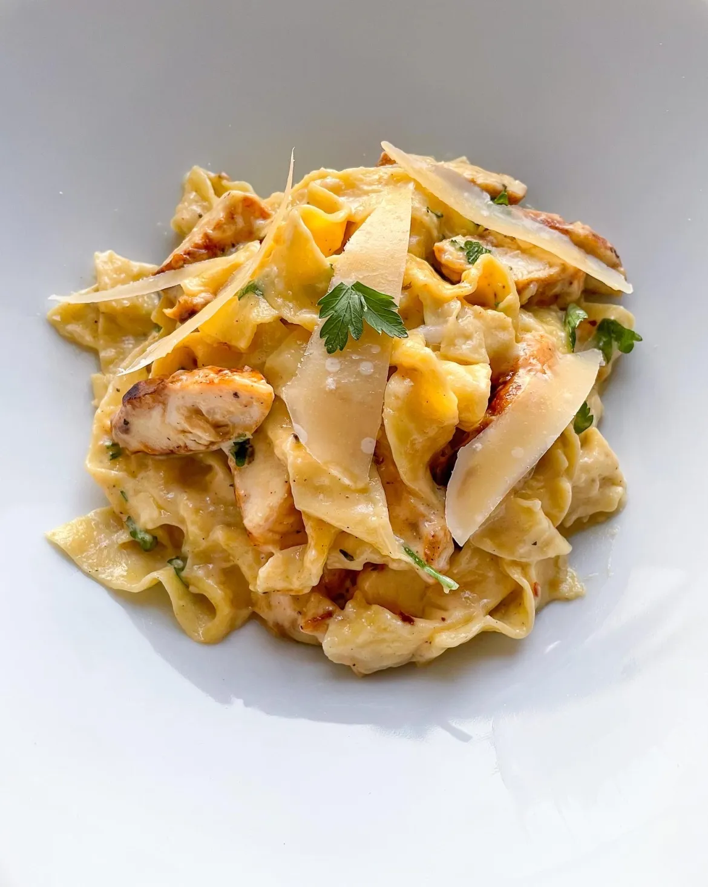

Chicken & Spinach Skillet Pasta with Lemon & Parmesan

This chicken pasta combines lean chicken breast and sautéed spinach for a meal that’s garlicky,
lemony and best served with a little Parm on top.
Yields 4 servings.
Ingredients
- 8 ounces penne pasta
- 2 tablespoon extra-virgin olive oil
- 1 pound chicken breast, cut into bite-size pieces
- 3/4 teaspoon salt
- 1/4 teaspoon ground pepper
- 4 cloves garlic, minced
- 1 cup dry white wine
- 2 teaspoon lemon zest
- 1/4 lemon juice
- 1/3 cup unsalted butter
- 4 tablespoons grated parmesan cheese
- 10 cups chopped fresh spinach
Directions
- Bring a large pot of water to a boil; add 8 ounces pasta and cook according to package
directions. Reserve ½ cup of cooking water; drain the pasta and set aside.
- Meanwhile, heat oil in a large high-sided skillet over medium-high heat. Add chicken pieces,
salt and pepper; cook, stirring occasionally, until an instant-read thermometer inserted in
thickest portion registers 165°F, 5 to 7 minutes. Add garlic; cook, stirring, until fragrant,
about 1 minute. Stir in wine, lemon zest and lemon juice; bring to a simmer over medium-high
heat, stirring occasionally. Add cubed butter and 1 tablespoon Parmesan; cook, whisking
constantly, until the sauce is creamy and emulsified, about 2 minutes. Add ¼ to ½ cup pasta
water; cook, stirring occasionally, until the sauce thickens slightly, about 2 minutes.
- Stir in chopped spinach and the cooked pasta. Cook over medium heat, stirring occasionally,
until the spinach is wilted and bright green, about 5 minutes. Divide among 4 plates; top with
the remaining 3 tablespoons Parmesan.